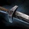

技能栏
钉锤/斧头
治疗技能
插槽技能
精英技能
单手剑/盾牌
治疗技能
插槽技能
精英技能
模板代码
DQkOJgMXNC7cEQAABhIAACsSAADUEQAAyhEAAA0QAAAGEisS1BEAAAAAAAA
复制
专精
可变选项：
根据情况，每个大师级特性都是可选的：
增加点范围症状压力，如果敌方阵容没有显著症状压力请随意选择。
敌方阵容能造成极大压力时选这个最好，不过没有增益移除。
在其他两个特性之间，有攻有守。面对带增益移除的症状阵容的最优选，比如死灵或者其他恶魔魂武。
可变选项：
增加总体续航，但会减少小规模战斗中的优势。只推荐和圣者项链搭配使用。
武器组

9
超级洁净法印
9s
9
超级能量法印
9s
可变选项：
符文
——属性好，附加一个冷却相对短的范围控制。
——更多耐力，属性尚可。
——攻击属性良好。
项链
贤者项链
——在没有辅助的单排玩家之间流行。
操作
总体
咒唤传奇之力会将能量重置到50、触发大量特性例如
或者
，甚至还可以触发你当前武器组的法印（如果法印冷却好了）。切换传奇是BD里的主要资源管理手段——能量低了或者技能都在冷却就切。不过这个不是全部情况，带恶魔的bd，切换传奇也可以造成些aoe爆发伤害或者管理身上的症状。
开局开巨龙姿态（格林特），趁还在起始点时开启以下4个持续性技能给团队提供增益：
（在能量接近0时使用主动技能）
在战斗中用
来处理症状。恶魔姿态下
会将症状转移给附近的敌人，在巨龙姿态下这个技能会延长附近盟友的增益时间，有
抗性
时使用最佳。
切换传奇会解除持续性技能，并且不会让他们完全cd。
可以用来击飞倒地的敌人，阻止队友拉人，或者将敌人击飞出点——这可以让你在占点的同时让敌人缓慢死亡，延迟他们的重生时间。
伤害
绝大多数伤害都来自于恶魔姿态技能和钉锤。
打出
⇒
组合技来叠加
威能
。这俩技能好了就用。
很适合给这套组合技做铺垫，确保两个技能都能命中目标。
现在有游戏模式区分，即便是有
，也不再是靠谱技能了。不过在某些情况下这个技能还是很强力，比如在小规模战斗中，移除敌人的
抗性
很关键。
是这个BD里最好的控制技能，能搅乱敌人或逼迫敌人撤退。虽然技能本身造成的伤害不多，但是如果身边有足够多的队友，你可以考虑多用这个技能给敌人压力，做击杀铺垫。
是使用苦痛召唤之后的一个好选择，前提是能量足够。虽然看着是单体技能，但是敌人要是挨得足够紧的话，这个技能是可以击中复数敌人的。
考虑用苦痛召唤之前先用
，因为苦痛召唤是跳跃终结技，拥抱黑暗可以制造黑暗领域。结合使用可以让你获得黑暗光环。
基本上是一个进攻性精英技能，可以给你的爆发增加一些额外的被动伤害。不仅如此，搭配
或者
使用，这个技能就可以用来面对症状压力了。
续航和脱战
每一个恶魔技能都可能触发
抗性
，触发间隔为5秒。 其他获得抗性的途径还有装备
时切换传奇或者使用精英技能触发
的6件套效果。
恶魔藐视提供的抗性在
治疗
之后
才会触发。所以你身上要是有
中毒
，先从其他途径获得抗性再使用治疗技能！
算是第三个治疗技能。提供一定量的治疗，格挡攻击还能清除症状。
对自己角色释放提供少量治疗和保护。
是想要快速获得
抗性
的最可靠技能。总体上也是一个优秀的辅助技能，能够给盟友移除症状和提供抗性。
对于所有有施放时间的解除控制技能，技能的第二部分都可以被打断。如果你的技能被打断了，除了会进入冷却之外，你还会失去使用技能的能量。
能解决这个问题——如果你使用了痛苦吸收，你会获得足够的
稳固
来帮助你安稳施放技能。
会是你最好的位移技能，在某些地图上可以用来跳到敌人没法跟上（至少是不能轻易跟上的）的地方。
的连带效果
是你的免死金牌——这效果能让你在持续时间内将所有伤害转化为治疗。有些玩家可能一看到光明多面体就会停止给你施加压力，在这种情况下你应该在使用圣光灌注之前等一小会。保证你至少能通过这个技能获得1w治疗量，试着预判别人的爆发然后提前使用光明多面体——光明多面体有施放时间，因此被眩晕时不能使用，但是圣光灌注是秒放的。
受克制
附带频繁症状移除的高症状伤害
{kind=link}
{kind=link}